El mapeo logístico es un sistema dinámico discreto definido por la regla de recurrencia:
$$ x_{n+1} = ax_{n} ( 1 - x_{n} ) $$ Donde:- \( x_{n} \in [0,1] \) representa la cantidad de población al tiempo \( n \).
- \( a \in [0,4] \) es el parámetro que relaciona muerte/natalidad.
Con este sistema es posible estudiar el comportamiento caótico de sistemas no lineales.
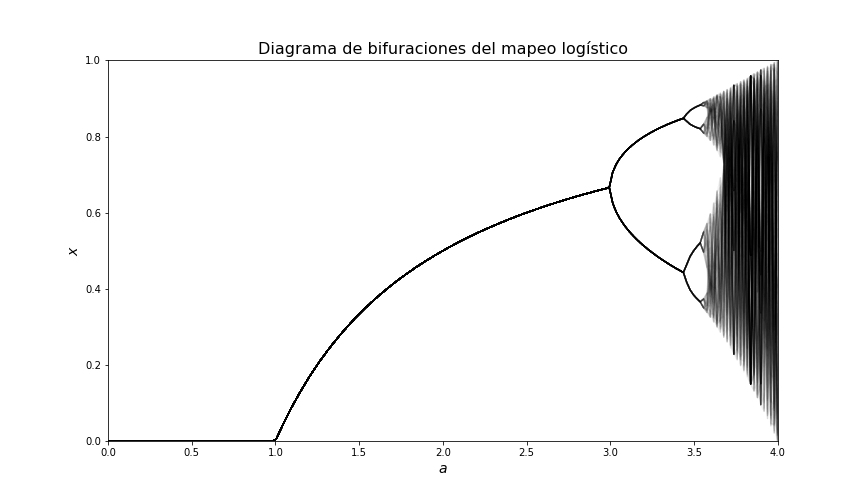
1.- Serie temporal, Diagrama de bifurcaciones y Coweb
En el primer punto se consideraron cuatro valores para el parámetro \( a \) que muestran distintos comportamientos con una condición inicial \( x_{0} = 0.2 \in (0,1) \).
- En el caso \( a = 2\) se muestra una órbita que converje a un punto fijo.
- En el caso \( a = 3.2\) tenemos una órbita de periodo 2.
- En el caso \( a = 3.5\) tenemos una órbita de periodo 4.
- En el caso \( a = 3.8\) tenemos un comportamiento caótico.
Resultados Serie temportal, Coweb e identificación del parámetro dentro del diagrama de Bifurcaciones.
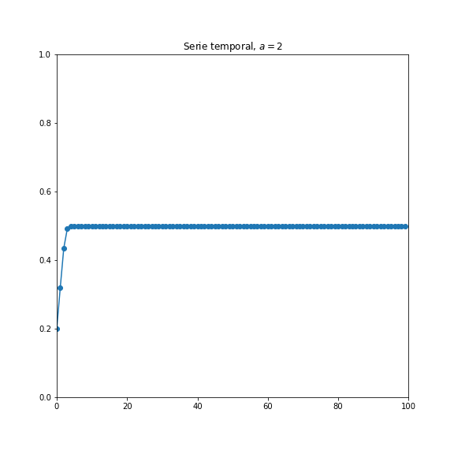
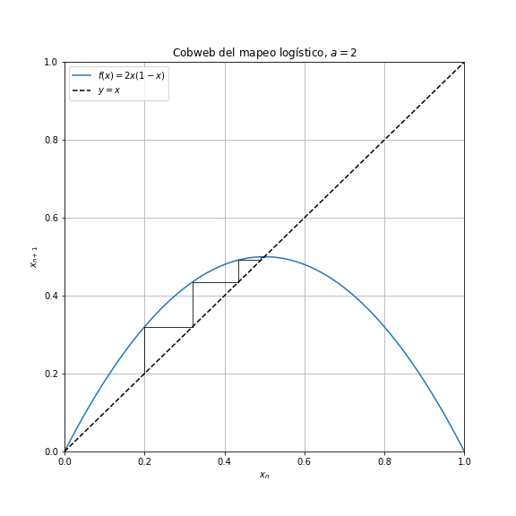
En el caso \( a = 2 \) podemos observar que la serie temporal se estabiliza en una línea recta horizontal en \( x = 0.5 \).
El coweb converge al punto fijo, en consistencia con la serie.
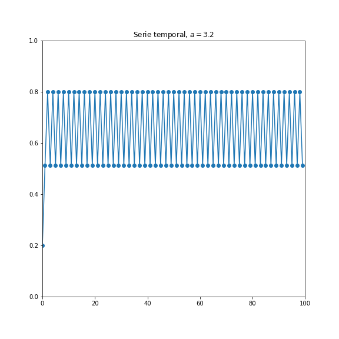
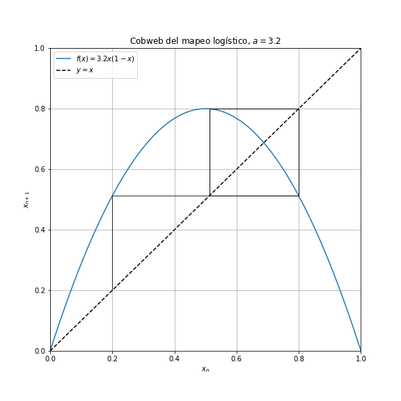
En el caso \( a = 3.2 \) podemos observar que la serie temporal oscila en dos
puntos distintos aproximadamente 0.5 y 0.8.
El coweb forma un cuadrado alrededor del punto fijo pasando por los valores que muestra la serie.
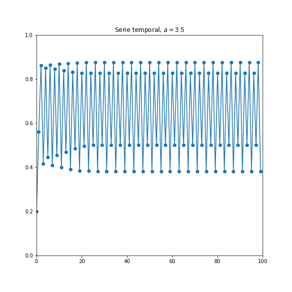
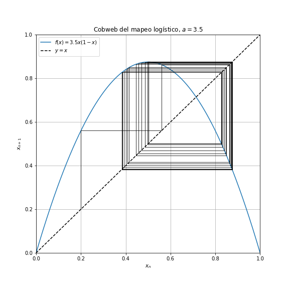
En el caso \( a = 3.5 \) podemos observar que la serie temporal oscila en cuatro
puntos distintos dos pasando 0.8, otros aproximadamente en 0.4 y en 0.5.
El coweb forma una forma cerrada alrededor del punto fijo que pasa por los cuatro puntos.
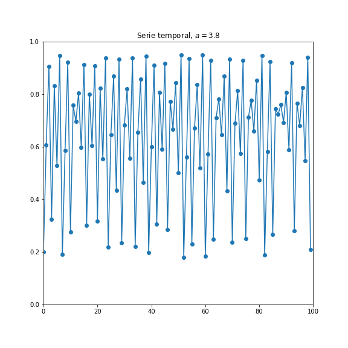
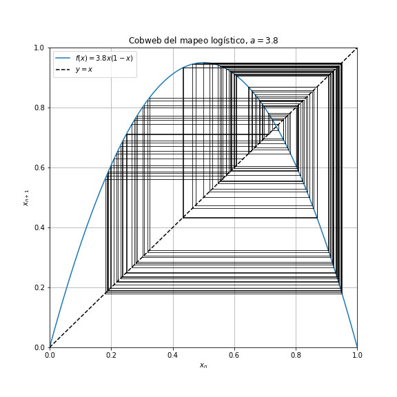
En el caso \( a = 3.8 \) podemos observar que la serie temporal oscila sin
lograr estabilidad en ningún punto.
El coweb no tiene un patrón de movimiento fijo.
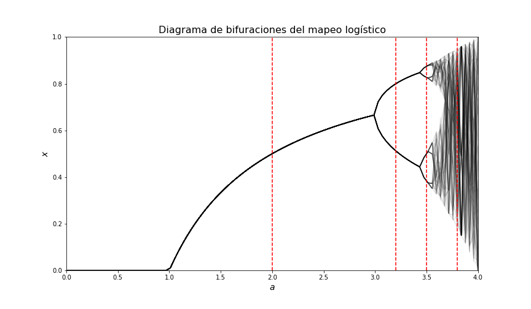
Se puede observar claramente al tipo de comportamiento que tiene cada valor del parámetro, pues en \( a = 2 \) la línea toca un solo punto; en \( a = 3.2 \) toca dos puntos; en \( a = 3.5 \) toca 4 puntos de la grafica; y finalmente, el valor \( a =3.8 \) corresponde a la zona caótica.
2.- Comparación de las representaciones
A continuación se muestra una tabla comparativa para ver las propiedades que se pueden obtener de cada tipo de grafica.
| Representación | Punto fijo | Órbita es periódica (si sí, qué periodo) | Caótico | Dinámica al variar a |
|---|---|---|---|---|
| Serie temporal | Es ideal para encontrar puntos fijos, porque sepuede observar en que valor se estabiliza x conforme el tiempo avanza. |
Sí se logra observar el comportamiento periódico y cuántos valores se repiten por lo que también nos muestra los periodos. |
Permite ver que para un valor del parámetro dado (en zona caótica), no existe estabilidad en ningún punto. |
No es claro, pues solo nos muestra valores individuales del parámetro. |
| Bifuraciones | El diagrama no tiene bifurcación en los puntos fijos, es decir, la zonas que muestran una curva única representan estos puntos. |
Sí muestra el periodo que se muestran como las ramas pero no se puede obtener información más allá. |
Sí es útil pues nos permite observar distintas regiones de comportamiento del sistema |
Es la mejor opción para ver la dinámica, pues la evolución de la gráfica depende directamente del cambio del parámetro a. |
| Coweb | sí, ya que la telaraña converge al punto fijo o lo rodea según sea el caso. |
sí, ya que genera una figura cerrada que va oscilando alrededor del punto fijo. |
Sí, porque no muestra un patrón definido alrededor del punto fijo. |
Al igual que la serie temporal, solo muestra valores individuales y no es posible ver la dinámica del parámetro de manera inmediata. |
3.- Transición al Caos
En este punto vamos a analizar el comportamiento por regiones del sistema con ayuda del mapa de bifurcaciones.
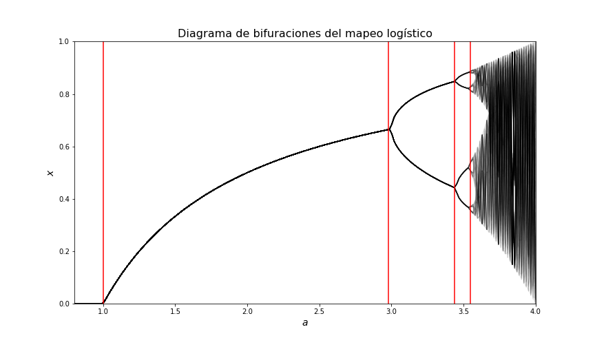
El mapa se dividió principalmente en cuatro zonas. La primera, correspondiente a únicos puntos fijos, se da aproximadamente entre 1 y 2.98; La zona para periodo 2 se fijo entre 2.98 y 3.44; Para la región con periodo 4 se considero entre 3.44 y 3.55; Finalmente la zona caótica corresponde entre 3.55 y 4.
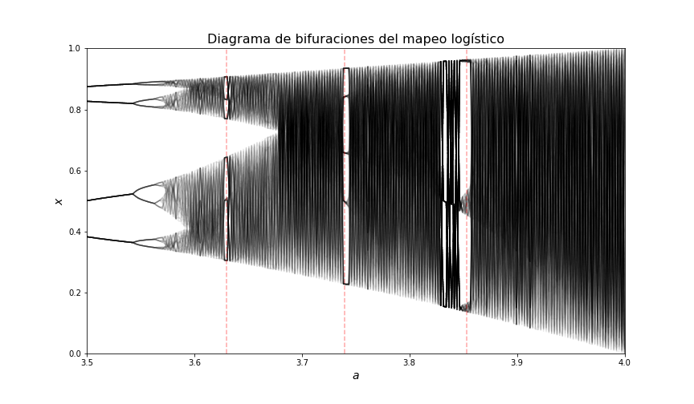
En este grafico, la zona mostrada corresponde a la parte caótica en donde podemos observar que hay ciertas partes con cierta "estabilidad" que se identificaron aproximadamente en los valores para a de 3.63, 3.74 y 4.853.
Gracias al grafico anterior podemos decir que no es verdadero el hecho de que conforme el parámetro a aumenta, el caos también lo hace; pues, notamos que dentro de la zona caótica podemos encontrar valores de a donde se recupera orden.
4.- Conjunto de Mandelbrot
A partir de la regla de correspondencia:
$$ z_{n+1} = z_{n}^{2} + c$$donde se considera el campo de los Complejos \( textbf{C} \), se obtuvo el mapa del conjunto de Mandelbrot donde la iteraciones paraban cuando \( |z_{n}| > 2 \). También se arego una guía sobre el eje real.
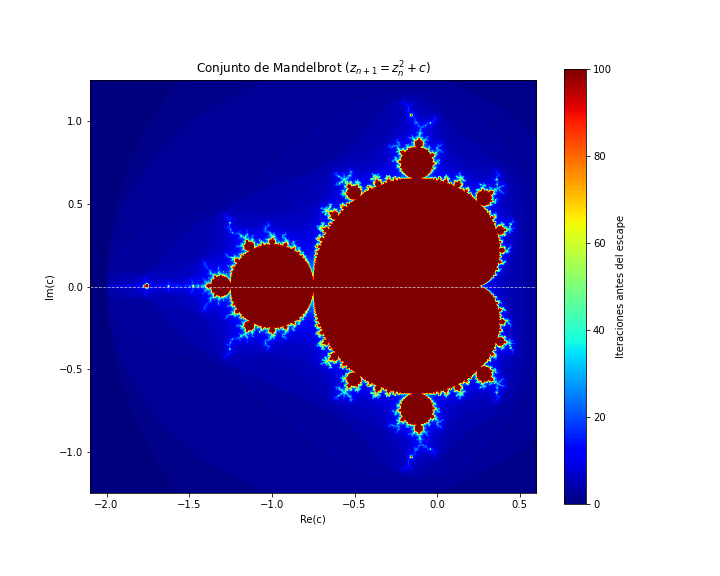
5.- Relación entre el Mapeo logístico y el conjunto de Mandelbrot
Sea
$$ x_{n} = \frac{1}{2} - \frac{z_{n}}{a} \quad \Rightarrow \quad x_{n+1} = \frac{1}{2} - \frac{z_{n+1}}{a} $$Entonces al sustituir en la ecuación del mapeo logístico, tenemos que:
$$ \frac{1}{2} - \frac{z_{n+1}}{a} = a \left( \frac{1}{2} - \frac{z_{n}}{a} \right) \left[ 1- \left( \frac{1}{2} - \frac{z_{n}}{a} \right) \right] $$Desarrollamos el corchete:
$$ \frac{1}{2} - \frac{z_{n+1}}{a} = a \left( \frac{1}{2} - \frac{z_{n}}{a} \right) \left( \frac{1}{2} + \frac{z_{n}}{a} \right) $$Juntamos el binomio conjugado:
$$ \frac{1}{2} - \frac{z_{n+1}}{a} = a \left( \frac{1}{4} - \frac{z_{n}^{2}}{a^{2}} \right) $$multiplicamos por \( -a \) : $$ z_{n+1} - \frac{a}{2} = z_{n}^{2} - \frac{a^{2}}{4} $$
Despejamos \( z_{n+1} \) y agrupamos los términos con \( a \) :
$$ z_{n+1} = a \left( \frac{1}{2} - \frac{a}{4} \right) $$ $$ \therefore z_{n+1} = z_{n}^{2} + \frac{a(2-a)}{4} $$Finalmente, sea \( c = \frac{a(2-a)}{4} \) , entonces:
$$ z_{n+1} = z_{n}^{2} + c $$ Por lo que recuperamos Mandelbrot, entonces tenemos que son equivalentes sobre el eje Real.
En la siguiente parte discutiremos sobre las semejanzas entre el mapeo logístico y el conjunto de Mandelbrot.
6.- Discusión Final
Gracias al diagrama de bifurcaciones, es posible ver que conforme el parámetro a va en aumento, el sistema tiende a perder estabilidad, comenzando con
Recursos
En la siguiento liga se encuentran los códigos utilizados: Códigos